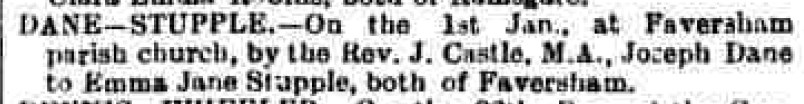
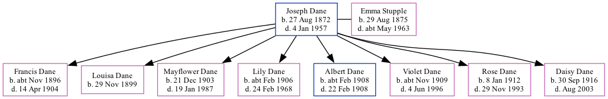

Joseph Dane 1872 - 1957 [ Home ] | [ Calendar ] | [ Surnames Index ] | [ Family History ]Joseph Dane , the husband of Emma Jane Stupple (the first cousin three-times-removed on the mother's side of Nigel Horne ), was born in Faversham, Kent, England on Aug 27, 18721,2,3 and married Emma (a domestic general servant with whom he had 8 children: Francis , Louisa Alice Maud , Mayflower , Lily Josephine , Albert , Violet Elizabeth , Rose Victoria and Daisy Lillian ) at St Mary Of Charity in Faversham on Jan 1, 18964 .
Joseph spent all of his life in Kent, England. Throughout his life, he lived in several places around the county: at West Street in Faversham on Apr 3, 188111 ; at his birthplace in 18968 ; at 3 Danes Cottage in Faversham on Mar 31, 190110 ; on Two Brewers, 1 Quay Lane in Faversham on Apr 2, 19119 and in 19137 ; on 44 South Road in Faversham in Nov 19235 ; and on 24 South Road in Faversham in 19386 and on Sep 29, 19391 .
He died on Jan 4, 1957 in Sittingbourne, Kent, England3 .
Children Francis was born c. Nov 1896Louisa Alice Maud was born on Nov 29, 1899Mayflower was born on Dec 21, 1903Lily Josephine was born c. Feb 1906Albert was born c. Feb 1908Violet Elizabeth was born c. Nov 1909Rose Victoria was born on Jan 8, 1912Daisy Lillian was born on Sep 30, 1916Citations 1939 Register - Findmypast (was the head of the household) England & Wales births 1837-2006 - Findmypast England & Wales deaths 1837-2007 - Findmypast England & Wales Marriages 1837-2005 - Findmypast From his daughter's passage to Canada From a newspaper clipping of his daughter's wedding 1913 Kelly's Kent Directory British Newspaper Marriage Notices - Findmypast 1911 Census for England & Wales - Findmypast (was age 39 and the head of the household) 1901 England, Wales & Scotland Census - Findmypast (was age 26 and the head of the household) 1881 England, Wales & Scotland Census - Findmypast (was age 9 and the son of the head of the household) Media Canterbury Journal, Kentish Times and Farmers' Gazette January 11, 1896  Canterbury Journal, Kentish Times and Farmers' Gazette January 11, 1896 1913 Kelly's Kent Directory England & Wales births 1837-2006 - BMD/B/1872/3/AZ/000158/267 England & Wales deaths 1837-2007 - BMD/D/1957/2/AZ/000227/067 Kent, Canterbury Archdeaconry marriages 1538-1928 - GBPRS/CANT/M/97029599/1 England & Wales marriages 1837-2005 - BMD/M/1896/1/AZ/000061/159 1881 England, Wales & Scotland Census - GBC/1881/0004768592 1939 Register - TNA-R39-1715-1715G-015-20 Kent marriages and banns - GBPRS/CANT/M/94026845/1 Family Tree Interactive Map
Map
Generated by ged2site . Last updated on Feb 18, 2025